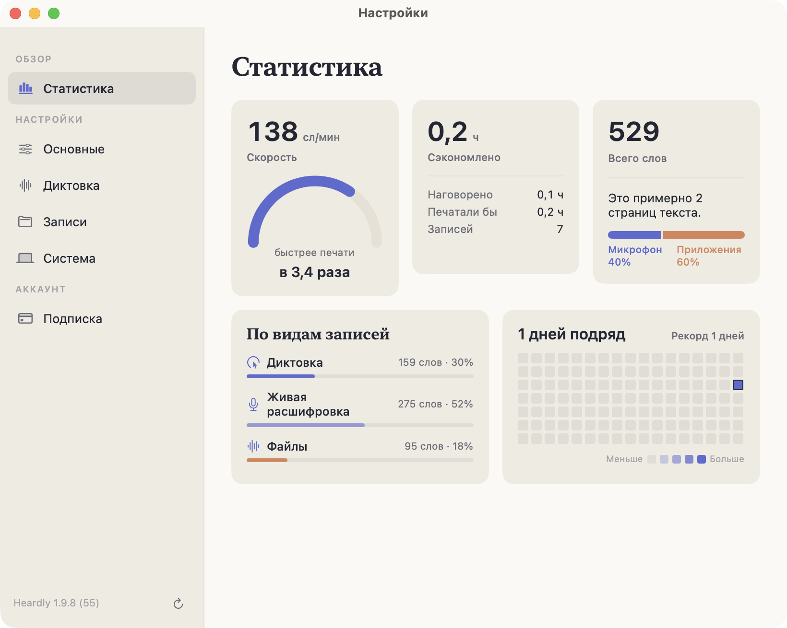
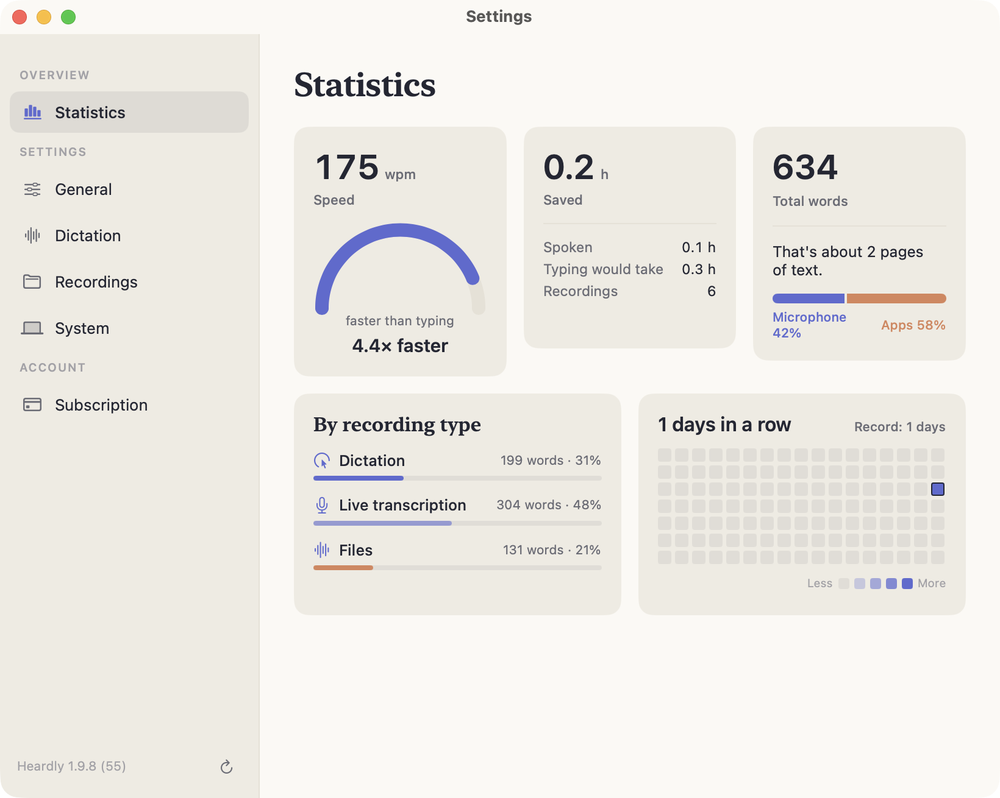

СтатистикаStatistics
Раздел показывает, сколько вы наговорили и сколько времени это сэкономило по сравнению с печатью. Считается всё по вашим записям и никуда не отправляется.This section shows how much you have spoken and how much time that saved compared with typing. Everything is counted from your own recordings and goes nowhere.


Что в карточкахWhat the cards mean
| СкоростьSpeed | Сколько слов в минуту вы наговариваете. Рядом — во сколько раз это быстрее печати.How many words a minute you speak. Beside it, how many times faster that is than typing. |
| СэкономленоSaved | Разница между временем, которое вы наговорили, и временем, которое ушло бы на набор того же текста.The gap between the time you spent speaking and the time the same text would have taken to type. |
| Всего словTotal words | Все слова во всех записях, плюс оценка в страницах и разбивка на микрофон и звук приложений.Every word across every entry, plus a rough page count and the split between microphone and app audio. |
| По видам записейBy kind | Сколько слов пришло из диктовки, из живых записей и из файлов.How many words came from dictation, from live recordings and from files. |
| Дней подрядStreak | Сколько дней подряд вы пользуетесь Heardly, и календарь активности рядом.How many days in a row you have used Heardly, with an activity calendar beside it. |
«Сэкономлено» считается от средней скорости печати, а не от вашей личной. Цифра показывает порядок величины, а не точное время.“Saved” is calculated from an average typing speed, not from your own. The number shows an order of magnitude, not an exact time.
Статистика строится из файлов в папке расшифровок. Удалите запись — она исчезнет и из статистики.
The statistics are built from the files in the transcripts folder. Delete an entry and it leaves the statistics too.